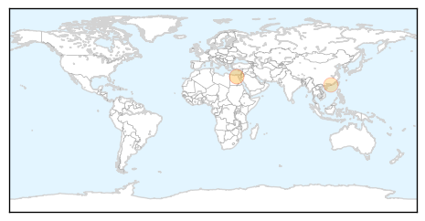

MERS
30-Day Web Trend
0 alerts, 0 warnings
30-Day Twitter Trend
0 alerts, 0 warnings
Article Locations
Article Confidences

Top Articles:
Top Tweets:
-
No tweets found for Apr 15, 2015
Measles
30-Day Web Trend
0 alerts, 0 warnings

30-Day Twitter Trend
1 alerts, 0 warnings

Article Locations

Article Confidences

Top Articles:
- 0.988
- Disney-linked measles outbreak soon to be over in California
- 0.963
- If we can’t stop measles, how will we stop a pandemic?
- 0.919
- Epidemics, public health, Maine
- 0.907
- Inhaled Measles Vaccine Falls Short of Injected Version in Study
- 0.894
- Disneyland-Linked Measles Outbreak Nearly Over « CBS Los Angeles
- 0.840
- Opinion Want to boost vaccination? Don’t punish parents, build their trust
- 0.588
- GCHD highlights benefits of infant immunizations
Top Tweets:
-
No tweets found for Apr 15, 2015